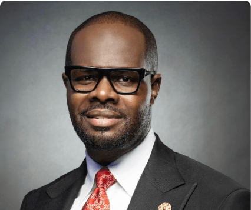

Linus Idahosa
Linus Idahosa is an internationally renowned businessman, social entrepreneur, and visionary thought leader. He founded the Del-York Group, spanning media, public relations, communications, technology, infrastructure, and development.
He also founded Del-York Creative Academy, which has trained more than 3,000 students in the film and creative industries through scholarships and subsidized programs.
His organizations have driven initiatives in media, entertainment, youth development, and global inclusiveness between the United States, China, and Africa. He is also co-chair of the Africa China Foundation for Social & Economic Development and Vice Chairman of the China Africa Business Council Nigeria.
Under his leadership, Del-York Group has signed landmark partnerships toward the development of Kebulania Lagos Film City. He has received awards for youth development, media excellence, and nation building, and has been hosted by African presidents and world leaders including the Queen of England.